Злодеи и Противники
Эквестрия — огромный мир, и далеко не все его обитатели дружелюбны. От школьных задир до древних королей-тиранов, каждый враг в этом списке преследует свою цель: нарушить гармонию и прорваться сквозь магические щиты Понивилля. Командующему обороной важно знать каждого из них в лицо.
Враги различаются по классам. Гранты и хулиганы берут числом, авиация в лице Шэдоуболтов и летучих мышей пытается проскочить над головами защитников, а бронированные монстры вроде мантикор требуют длительного обстрела. Самая сложная часть битвы — боссы, обладающие уникальными умениями влияния на ваши башни.
Школьные задиры и горожане
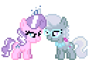
Даймонд Тиара и Силвер Спун
Классический дуэт задир. Они слабы, но быстры и часто идут в авангарде первой волны.

Спойлд Рич
Мать Даймонд Тиары. Более выносливая версия обычного врага, требует больше ударов для победы.
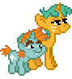
Снипс и Снейл
Неуклюжие, но упорные помощники Трикси. Двигаются медленно, но могут доставить хлопот своим числом.
Аферисты и Знать
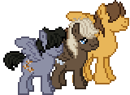
ХУЛИГАНЫ
Скори - Один из хулиганов-спортсменов. Двигается быстро и прямолинейно, пытаясь проскочить мимо башен на скорости. Хупс - самый стремительный из банды хулиганов. Его очень сложно поймать одиночными выстрелами без замедления Флаттершай. Дамбелл - репкий задира, обладающий средним запасом здоровья. Идет в середине группы, прикрывая собой более быстрых союзников.
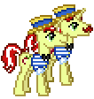
Флим и Флэм
Два брата-афериста. Действует одинаково стремительно, часто появляясь во второй волне.
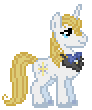
Принц Блублад
Самовлюбленный дворянин. Достаточно крепкий противник, который не спешит, считая, что вся дорога принадлежит ему.
Авиация и Наемники
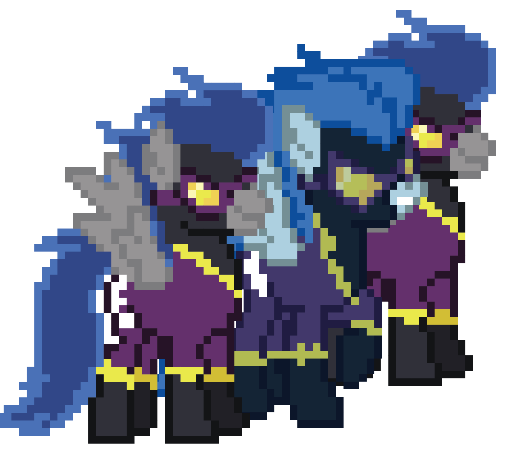
Шэдоуболты
Темные двойники Радуги Дэш. Самые быстрые летучие враги в игре, которых крайне сложно поймать без замедления.
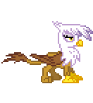
Гилда
Гордый грифон. Обладает средним запасом здоровья и высокой скоростью полета.
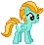
Лайтнинг Даст
Агрессивный летун. Она движется рывками, пытаясь оставить вашу оборону позади.
Монстры и Тени
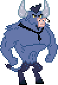
Стронгхуф (Бык)
Настоящий танк. Очень медленный, но невероятно живучий. Требует внимания всех ближайших башен.
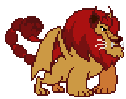
Мантикора
Опасный лесной зверь. Сочетает в себе большую силу и приличную скорость передвижения.
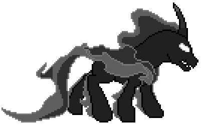
Теневые Пони
Порождения магии Сомбры. Могут внезапно ускоряться и становиться полупрозрачными.
Великие Боссы
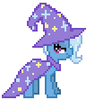
Великая и Могучая Трикси
Мастер магических трюков. Как босс, она обладает огромным здоровьем и требует тактической расстановки башен.
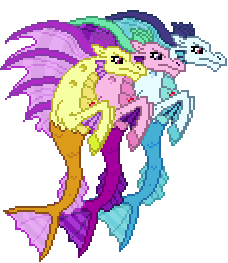
Сирены (Адажио, Ария, Соната)
Мифические существа, чьи песни лишают воли. Это групповой босс с колоссальным запасом энергии.
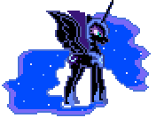
Найтмер Мун
Главный антагонист ночных уровней. Способна усыплять ваших пони, делая их бесполезными на долгое время.
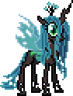
Королева Кризалис
Мастер превращений. Она заменяет ваших пони на перевертышей, разрушая оборону изнутри.
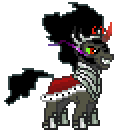
Король Сомбра
Тиран Кристальной Империи. Самый мощный враг, блокирующий клетки строительства своими кристаллами.
Стратегия победы всегда индивидуальна. Против быстрых целей всегда держите наготове Флаттершай, а против боссов — накапливайте золото для призыва Принцессы Луны или постройки нескольких Эппл Джек.
Не забывайте, что каждый пропущенный враг лишает вас жизней. Боссы отнимают по 5 жизней сразу, поэтому их уничтожение является приоритетной задачей для любого игрока.
Изучайте волны, следите за индикаторами и помните: судьба Понивилля в ваших руках! Эквестрия надеется на вашу тактическую мудрость.
Таблица наград за победу:
| Класс врага | Награда | Пример |
|---|---|---|
| Обычные | 5💰 | Тиара, Снейл |
| Элитные | 15💰 | Гилда, Принц |
| Танки | 25💰 | Стронгхуф, Мантикора |
| Мини-боссы | 100💰 | Сирены |
| Гранд-боссы | 500💰 | Сомбра, Кризалис |